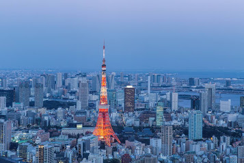
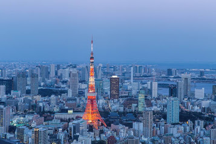

Imágenes
| Santuario de Itsukushima | |
| Tokyo |  |
Japón es un país asiático ubicado en el océano pacífico. Se destaca a nivel mundial por ser un país desarrollado altamente industrializado, con énfasis en el desarrollo tecnológico
A pesar del crecimiento y el bienestar de sus habitantes (Japón ostenta la mayor esperanza de vida), la población de Japón lentamente se va envejeciendo.
| Capital | Tokyo |
| Número de habitantes | 126.500.000 |
| Superficie (km2) | 377.915 |
| Idioma oficial | Japonés |
| Moneda | Yen |
| Huso horario | GMT (UTC+9) |
| Fecha de independencia | 11 de Febrero de 660 AC |
| Santuario de Itsukushima | |
| Tokyo |  |